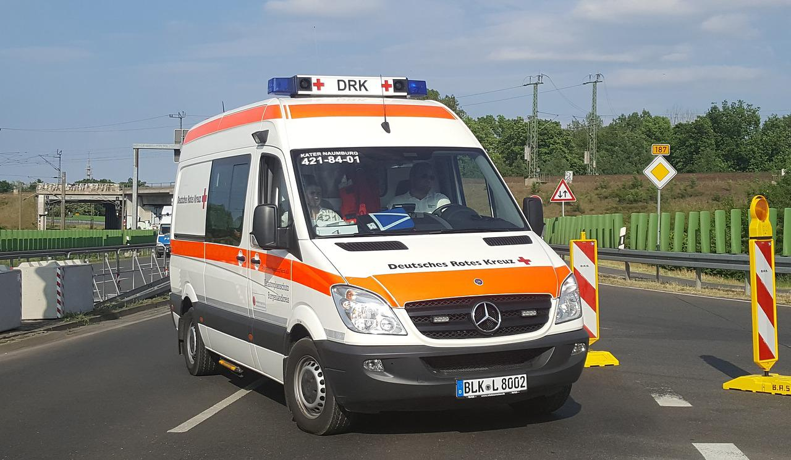

«Das Feuerlaufen war freiwillig – wir haben niemanden gezwungen»
Bei einem Feuerlauf auf der Halbinsel Au wurden mehrere Personen
verletzt. Eine Teilnehmerin und ein Augenzeuge erzählen.
Bei einer privaten Veranstaltung liefen bei einem Feuerlauf auf der
Halbinsel Au (Gemeinde Wädenswil) mehrere Personen über glühende
Kohlen. Die Sanität musste am Dienstagabend mit einem Grossaufgebot
ausrücken, mehr als die Hälfte der Personen wurde ins Spital
gebracht. Eine Teilnehmerin erzählt gegenüber 20 Minuten: «Nachdem
ich über die Kohlen gegangen bin, kühlte ich meine Füsse zusammen
mit den anderen im kalten Wasser. Erst mit der Zeit bemerkten
einige, dass die Schmerzen nicht weggingen, sondern schlimmer
wurden. Die Betroffenen hatten dann grosse Blasen an den Füssen.»
Laut der Kantonspolizei Zürich wurden 25 Personen vor Ort
medizinisch behandelt, wovon 13 Personen mit schwereren Verletzungen
hospitalisiert werden mussten. Die Ermittlungen zu den Umständen des
Unfalls dauern noch an. Neben der Kantonspolizei Zürich standen zehn
Rettungswagen, ein Grossraumrettungsfahrzeug, zwei Notarztequipen
und ein Pikett Offizier von Schutz und Rettung Zürich, der
Rettungsdienste Lachen, Zug, Männedorf und Regio 144 und eine
gemischte Patrouille der Stadtpolizei Wädenswil und der
Gemeindepolizei Horgen im Einsatz.
Ein Augenzeuge kritisiert, dass das Ganze viel schlimmer dargestellt
werde als es gewesen sei. «Einige Teilnehmende eines
Feuerlaufseminars bekamen Blasen an den Fusssohlen. Dann ging alles
sehr schnell und die Polizei und eine Ambulanz nach der anderen
fuhren vor.» In der Zwischenzeit hätten alle Verletzten das Spital
wieder verlassen können. Beim betroffenen Unternehmen handelt es
sich um den Werbevermarkter Goldbach, der wie 20 Minuten zur TX
Group gehört. «Das Feuerlaufen war für alle Teilnehmenden
freiwillig, es wurde niemand gezwungen. Die Message vor Ort war,
dass man mindestens so viel Mut beweist, wenn man nicht über die
glühende Kohle geht», sagt eine Sprecherin auf Anfrage.
Quelle: 20Minuten
